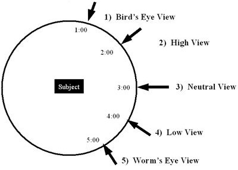
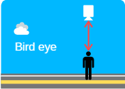
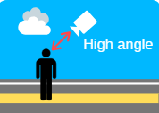
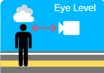
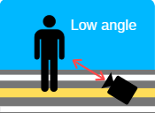
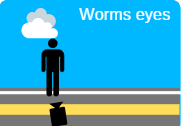

<!DOCTYPE html>
<html lang="en">
  <head>
    <meta charset="UTF-8" />
    <meta http-equiv="X-UA-Compatible" content="IE=edge" />
    <meta name="viewport" content="width=device-width, initial-scale=1.0" />
    <title>photographyhandbook</title>
    <link
      rel="stylesheet"
      href="https://cdnjs.cloudflare.com/ajax/libs/font-awesome/5.15.3/css/all.min.css"
    />
     <link
      rel="stylesheet"
      href="https://maxcdn.bootstrapcdn.com/font-awesome/4.5.0/css/font-awesome.min.css"
    />
    <link rel="stylesheet" href="./css/style.css" />
    <link rel="stylesheet" href="./css/carousel.css" />
    <link rel="stylesheet" href="./css/styleCard.css" />
    <link rel="stylesheet" href="./css/photoIntro.css" />
  </head>
  <body>
    <!-- partial:index.partial.html -->
    <nav>
      <div class="wrapper">
        <div class="logo">
          
        </div>
        <input type="radio" name="slider" id="menu-btn" />
        <input type="radio" name="slider" id="close-btn" />
        <ul class="nav-links">
          <label for="close-btn" class="btn close-btn"
            ><i class="fas fa-times"></i
          ></label>
          <li><a href="./index.html">Home</a></li>
          <li><a href="./course.html">Course</a></li>
          <li><a href="./aboutus.html">About Us</a></li>
          <li><a href="./contact.html">Contact</a></li>
        </ul>
        <label for="menu-btn" class="btn menu-btn"
          ><i class="fas fa-bars"></i
        ></label>
      </div>
    </nav>
    <div class="form">
      <h3>Camera angles</h3>
      <br />
      <div class="row">
        <div class="offset-lg-3 col-lg-6">
          &nbsp;
        </div>
      </div>
      <p>
        Where the camera is placed in relation to the subject can affect the way
        the viewer perceives the subject. There are a number of camera angles,
        such as a high-angle shot, a low-angle shot, a bird'seye view, a
        worm's-eye view and natural view. A viewpoint is the apparent distance
        and angle from which the camera views and records the subject.
      </p>
      <br />
      <h5 class="text-center">Bird’s eye view</h5>
      <div class="row">
        <div class="offset-lg-4 col-lg-4">
          &nbsp;
        </div>
      </div>
      <p>
        Bird view images are often shot from a 40-degree angle. But this is also
        not written in stone. Many overhead shots are called bird's-eye view
        images, and they are taken from a 90-degree angle above the scene. In
        film and video production, bird's-eye view means a shot that is looking
        directly down on the subject.
      </p>
      <br />
      <h5 class="text-center">High view</h5>
      <div class="row">
        <div class="offset-lg-4 col-lg-4">
          &nbsp;
        </div>
      </div>
      <p>
        A high angle shot is when the camera looks down on the character or
        subject from an elevated perspective. This is usually achieved by
        placing the camera higher than the subject and then angling it down on
        them. This can range from a shallow angle just above eye level all the
        way to directly above the subject.
      </p>
      <br />
      <h5 class="text-center">Natural view</h5>
      <div class="row">
        <div class="offset-lg-4 col-lg-4">
          &nbsp;
        </div>
      </div>
      <p>
        The eye level shot is considered the most natural camera angle.
        Capturing the shot at eye-level offers a neutral perception of the
        subject. Because it is the way in which we usually see people, this
        camera angle can help the audience connect with the subject.
      </p>
      <br />
      <h5 class="text-center">Low view</h5>
      <div class="row">
        <div class="offset-lg-4 col-lg-4">
          &nbsp;
        </div>
      </div>
      <p>
        A low angle shot is a photo taken from a camera angle positioned below
        the average eye line and pointing up. Low angle views can be used in
        conjunction with wide shots, medium shots, close-ups, and most other
        standard cinematic shots.
      </p>
      <br />
      <h5 class="text-center">Worm’s eye view</h5>
      <div class="row">
        <div class="offset-lg-4 col-lg-4">
          &nbsp;
        </div>
      </div>
      <p>
        Worm's eye view photography is a type of photography that is taken from
        a low angle, looking up at the subject. This perspective is achieved by
        positioning the camera below the subject, often lying on the ground or
        using a tripod with the camera pointing upwards.
      </p>
      <br />
      <br />
      <h6><strong>Other camera angles</strong></h6>
      <p>
        • Hip Level Shot<br />
        • Knee Level Shot<br />
        • Ground Level Shot<br />
        • Shoulder-Level Shot<br />
        • Dutch Angle Shot<br />
        • Aerial Shot / Helicopter Shot
      </p>
    </div>

    <footer>
      <div class="footer">
        <div class="row">
          <a target="_blank" href="https://www.facebook.com/creativedonut">
            <i class="fa fa-envelope"></i>
          </a>
          <a target="_blank" href="https://www.facebook.com/creativedonut">
            <i class="fa fa-facebook"></i>
          </a>
          <a target="_blank" href="https://www.facebook.com/creativedonut">
            <i class="fa fa-linkedin"></i>
          </a>
          <a target="_blank" href="https://twitter.com/dropyourbass">
            <i class="fa fa-twitter"></i>
          </a>
          <a target="_blank" href="https://github.com/vipulsaxena">
            <i class="fa fa-github"></i>
          </a>
        </div>

        <div class="row">
          <ul>
            <li><a href="#">Contact us</a></li>
            <li><a href="#">Our Services</a></li>
            <li><a href="#">Privacy Policy</a></li>
            <li><a href="#">Terms & Conditions</a></li>
            <li><a href="#">Career</a></li>
          </ul>
        </div>

        <div class="row">
          [CREATER NAME] Copyright © 2023 [Creater Name] - All rights reserved
          || Designed By: [name]
        </div>
      </div>
    </footer>
  </body>
</html>
